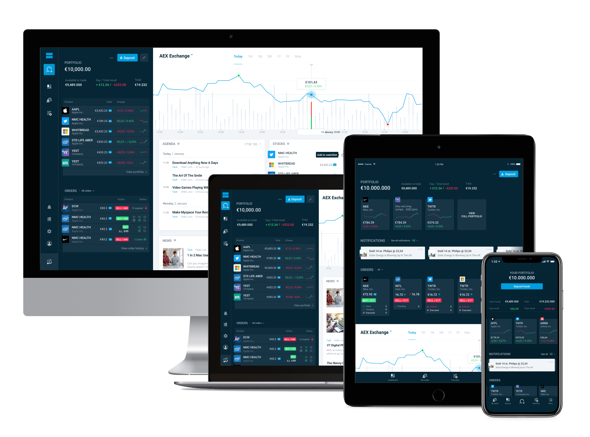

January 2018
Part 1.
Research and design workflow.
In 2017 DeGiro Trading Platform became one of the five biggest brokers in the world and by far the largest in Europe, beating the competitors with lower fees and a huge selection of products. As a product designer I was part of an ambitious project to redesign the Platform and Trading experience and prepare it to scale. I am going to share with you the work I have done and what I have learnt.
The challenge
In just 4 years
DeGiro
revolutionized the trading industry making it accessible to millions of people across the globe.
The web platform (designed in 2013) and the mobile app (designed a couple of years later) struggled to keep up alongside the growth of the company.
The applications were not able to add any more functionality without ruining performance and user experience. They were hard to navigate, the code base became unmaintainable.

The current desktop and mobile apps
On the other side there is an impressive crowd of day-to-day users who entrust large sums of money in DeGiro. That makes the redesign project quite challenging — we can’t afford disappoint our customers’ loyalty.
My role
I have joined the company to help re-invent the platform and design a new sleek experience. Our team is rather small: Frontend Engineer, a couple of Backend Developers and myself; also we get some valuable insight from the Head of Product. While I work exclusively on the new design, the rest of the team has to split their time between maintaining the current platform and working on the new one.
Design workflow
Over time I have formulated a design workflow that I have personally used as a starting point for this project, and kept tweaking along the way.
Below is the summarized version and more details about each phase follows afterwards:
1. Analyze the current product
- Defining core user goals and tasks
- Finding weak parts in the current platform, where user tasks are done inefficiently
- Finding more growth opportunities
2. Research
- Get to know direct and indirect competitors, their products, pro’s and con’s, finding differences in products and the target audience
- Finding interesting ideas and solutions from other fields, such as smooth user flows, UI ideas etc.
- Get familier with the market and industry, its history, potential, future expectations and disruptive innovations.
- Get to know your user, what would be the target audience(s), their background, values, other products they are using, etc.
3. Roadmap on different scales:
- 5 years
- 5 months (MVP version for the first release)
- 5 weeks
4. Architecture
- Defining main user jobs and related user flows
- Mapping the core product parts together
- Drafting the information architecture
5. Wireframes
- Basic UI: responsive layouts, navigation, interactions
- Making the first level of fidelity for the core screens and user flows (paper sketches)
6. Discuss
- Making sure user goals do not conflict with business goals
- Talk to developers to understand technical boundaries
- Prioritize
7. Design language
- Basic color palette, typography, basic brand elements
- Setting the tone of voice
- Setting up the design environment
8. Crafting interfaces
- Designing basic responsive layouts
- Designing core UI components
- Designing interactions
9. Test and get feedback
10. Implement
- For development – prepare basic layouts, reusable components, UI elements and their interactions
- Set up handing off process
11. Iterate
I apply this workflow on different scales - gradually zooming in from the big picture concept to a single feature design, jumping from the last step back to the first one, adding more details and verifying decisions made in previous phases. It's like an artist painting a picture - sketching the general shapes first and adding more details layer after layer (my fine arts education has proven to be useful in an unexpected manner).
Phase 1. Research.
In most of the cases, we don’t create products for ourselves to use, it is meant to be used by other people to help them solve their problems. As “Jobs to be done" methodology claims, people hire your products to serve for certain jobs. The logical starting point would be to ask enough " Why's" to understand what is the initial Job that your product is hired for.
“People do not just buy products and services for their features or other attributes, they hire them to get a job done.”
DeGiro Trader has been around for quite a while, so I have started with investigating what are the user’s motivations, their main expectations from DeGiro Trading Platform if we can distinguish different user segments and their use cases.
Try it yourself
I have very basic financial background so it's quite a journey to understand the whole new world of trading and investing. I have started with learning about basic financial terms and principles, bought a few stocks myself to try the platform and to feel the experience of risking own money. I’ve been observing how other people trade using our platform or something else, analyzing the metrics that were available. Although I am still far from being confident with my trading skills, I learnt enough to distinguish few very different ways people use our trading app:
- Some would buy and keep for a longer period, waiting for selling prices to rise - Investors
- Others would buy and sell hundreds times a day, gaining on price differences - Traders
Obviously, these are completely different use cases, but people use the exact same Platform to perform them.
To deep dive into this finding, I have sketched the most common user journeys for both of this cases. This gives a great first impression of how the product is used.
For example the daily journey for long term investors would be like:

It illustrates that people tend to skip the homepage with irrelevant to them global markets updates, first they want to see they own results and then, maybe, go explore more.
Competitors research
Another great way to learn about the industry and the problem - check what the competitors are doing. I was talking to my colleagues and they would always tell me: “Look at X, they have great this and that”.
By trying out competitors products, you learn even more about your own and definitely, find lots of hidden potentials you did not think about. And always look for differences, often similar product in fact aim to solve different problems or targeted to different audiences. For example, we target to people with a certain financial background and understanding what investing is about, so we should be conscious comparing them to solutions targeted to millennials or gambling-like portals.
I think it’s important to stay in the observation mode and not to start generating ideas and wireframes immediately. There is a risk of choosing the wrong path without discovering all the aspects and possibilities.
Empathy for your user. Personas vs Jobs.
I have been always struggling to understand the use of personas in the design process. Alright, if I know that our the average user is an educated man above 40, how would it help me to design? And do all educated men have the same taste and a way of thinking? And what if we can distinguish 100 different personas we need to design for, would it add clarity into the process? I really doubt so.
On the other hand learning that people wish their money generate more money can help a lot! And it would not matter so much if we are talking about millions or few hundreds, teenagers or businessmen, Netherlands or Pakistan, everyone will want to have their wallet safe and growing.
It might seem logical that you would design differently for 14 y.o. versus 40 y.o., but think more about it - teenagers love iPhone not less than mature adults. So I don’t like to focus on personas too much, the great product should be great for everyone.
“Great product should be great for everyone”
Roadmap for 5 weeks, 5 months, 1 year and more
It always helps to have a plan!
I prefer to start with a very rough long-term vision with a bunch of placeholders, but which would point out the direction the product and business would move towards. If it's not done yet, it's the time to talk to those who decide on the business/product/technical strategy and make sure you are all on the same page. The goal is to translate the business strategy into product vision.
The next step would be to draft of the shorter term roadmap, for our case it would be the first release of the new platform.
Then I would split it into smaller chunks and plan for every month, week and day.
How will we release?
We should keep in mind that transition from the old solutions to the new one will be very painful especially for active and most profitable users. Nobody likes going out of the comfort zone, people will have to learn how to use the new interface, we need to retrain our support team, write new information resources etc. So this part has to be really well planned.
The agile transition would be done in several steps: first, we introduce the new platform only to some new users who did not form their habits yet, from them we will learn and polish it, then make it optional for the rest.
Carefuly elaborated onboarding would play a very important role in this transition.